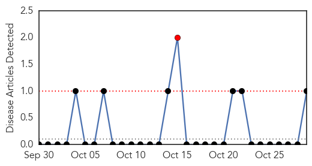
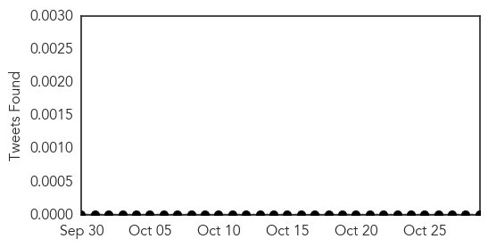
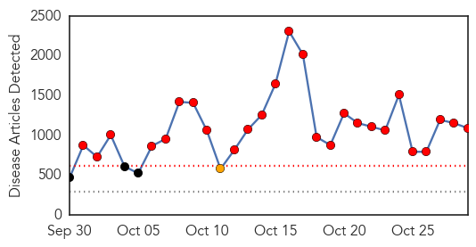
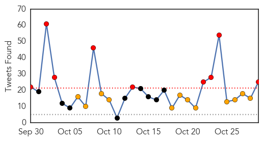
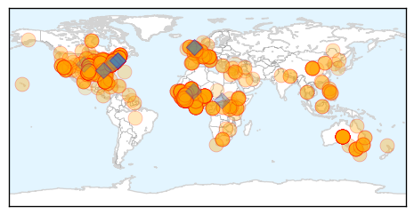

Mold/Fungal
30-Day Web Trend
1 alerts, 0 warnings

30-Day Twitter Trend
0 alerts, 0 warnings

Article Locations
Article Confidences

Top Articles:
Top Tweets:
-
No tweets found for Oct 29, 2014
Ebola
30-Day Web Trend
26 alerts, 1 warnings

30-Day Twitter Trend
9 alerts, 12 warnings

Article Locations
Article Confidences
Top Articles:
- 1.000
- New Ebola cases in Liberia appear to be slowing
- 1.000
- Rate of new Ebola infections in Liberia is slowing, WHO says
- 1.000
- New Ebola cases in Liberia appear to be slowing
- 1.000
- Ebola: health fears stop British journalist from hosting awards
- 1.000
- Chronology - Worst Ebola outbreak on record tests global response - World
- 1.000
- Ebola: New cases slowing in Liberia
- 1.000
- Ebola appears to be slowing in Liberia, says World Health Organisation
- 1.000
- The implications of the Ebola outbreak for public health and security
- 1.000
- Silverton Health running Ebola drills
- 1.000
- Bay Area doctors join Ebola fight despite quarantine risks
- 1.000
- New York doctor with Ebola improves, nurse reunited with dog
- 1.000
- Ebola crisis: Liberian admissions declining but WHO says threat not over; death toll unchanged
- 1.000
- A look at latest Ebola developments
- 1.000
- AP IMPACT: US health care unprepared for Ebola
- 1.000
- Ebola Outbreak in Liberia May Be Slowing
- 1.000
- New Ebola cases slowing in Liberia, but too soon to celebrate: WHO
- 1.000
- Ebola: Three reasons why most U.S. patients have survived
- 1.000
- 'Abundance of caution:' Saginaw, Midland hospitals talk Ebola preparedness
- 1.000
- Ebola: Scrutiny of Travelers Heightened
- 1.000
- Ebola Patients’ Numbers Dwindling In The U.S. [Video]
- 1.000
- Ebola outbreak: Nato must do more to stem crisis, say diplomatic heavyweights
- 1.000
- U.S. Health Care System Woefully Unprepared For Ebola
- 1.000
- Obama Warns Against Ebola Quarantines
- 1.000
- New York doctor with Ebola improves, nurse reunited with dog
- 1.000
- UN chief criticises travel bans, says Ebola should be stopped at source
- 1.000
- Feds, Obama administration fear that Ebola can uncontrollably go airborne
- 1.000
- New Ebola cases slowing in Liberia but too soon to celebrate
- 1.000
- Nurse fights Ebola quarantine, says she won't be 'bullied around by politicians'
- 1.000
- 9 Kenyans from Liberia test negative for Ebola
- 1.000
- Safeguarding Yourself From Ebola If You Are Travelling to Affected Areas
- 1.000
- UK government to match £5m of public's Ebola donations
- 1.000
- UK government to match £5m of public's Ebola donations
- 1.000
- ABC News (Australian Broadcasting Corporation)
- 1.000
- Supportive care may help American Ebola patients survive
- 1.000
- New Ebola cases slowing in Liberia, but too soon to celebrate
- 1.000
- Ebola cases lead to hysteria, fake reports of virus
- 1.000
- Nigeria is Ebola-free!
- 1.000
- Vermonter voluntarily quarantined after trip to West Africa
- 1.000
- Disaster charities launch ‘unprecedented’ Ebola fund appeal — RT UK
- 1.000
- UW-W students not at risk for Ebola, says director
- 1.000
- New Ebola cases slowing in Liberia, but too soon to celebrate—WHO
- 1.000
- Ebola: Here's Why Travel Bans Could Make Americans Less Safe
- 1.000
- When It Comes to Ebola, What Does Quarantine Really Mean?
- 1.000
- UN #Ebola effort faces 'information challenge'
- 1.000
- Top UN Ebola official new cases poorly tracked
- 1.000
- New York doctor with Ebola improves, nurse reunited with dog
- 1.000
- Six travelers from West Africa being monitored for Ebola symptoms in Indiana
- 1.000
- Ebola slowing in Liberia
- 1.000
- AP: US Health System Would Be Overwhelmed By Ebola Outbreak
- 1.000
- World Bank Chief Appeals For Volunteers
Showing top 50 articles...
Top Tweets:
- 0.941
- Follow the latest on the Ebola outbreak
- 0.939
- Flu and Ebola have some similar symptoms but flu is common Ebola is very rare. http://t.co/QTmauZZdUF getafluvax
- 0.885
- We are calling on all the African non- Ebola affected regions to pray support and help fight Ebola so this deadly virus will go away.
- 0.861
- RT: Ebola can spread only once symptoms develop but fueling panic Australia restricts ALL West Africa travelers!! http://t…
- 0.846
- RT: infected w Ebola in US: 1 infected in W Africa: ~10000 Guess where we're mobilizing 1000s of health workers & where…
- 0.808
- President Obama: Until Ebola is stopped in West Africa the world will see a few cases elsewhere."We can't hermetically seal ourselves off"
- 0.797
- People need to understand THIS-->MT: US can’t get to zero risk until we stop the Ebola epidemic at its source in West Africa.
- 0.788
- RT: Venga tod@s con AFRICA contra el Ebola!...AfricaStopEbola Africa Stop Ebola: http://t.co/23AZIfdQHE
- 0.773
- TAE is a small group. We just started 6 weeks ago and wow! We have a lot in stock to fight Ebola. Ebola will not succeed in West Africa
- 0.761
- RT: In statement MSF says forced quarantine of health workers returning from Ebola-hit nations "is not based upon established medica…
- 0.723
- RT: Progress on Ebola in Liberia: "the percentage of people testing positive for the disease has dropped as well." http://t.c…
- 0.716
- Ebola in healthcare workers: @WHO says Liberia's sharp increase (+71) due to changes in reporting inclusion of cases previously unreported
- 0.714
- So are Ebola cases actually slowing in Liberia? Would be great news.
- 0.668
- .@WHO says that the case fatality rate for the Ebola outbreak is `70% -- similar across 3 countries. Seems to be better survival in ETUs.
- 0.644
- New Ebola numbers from missing data from Liberia for Oct. 19-21 & 26-27 ie low. Liberia has had a staggering 6535 cases.
- 0.612
- Follow the latest on the Ebola outbreak https://t.co/2kFCTZyFEW
- 0.611
- .@WHO Aylward says some of the big jump in Ebola cases (~3500) is due to people catching up to data. Some of new cases are old cases.
- 0.583
- Nigerians fight against Ebola Senegal fight against Ebola..so we are calling on Liberians Guineans and Sierra Leonean to stand and fight
- 0.582
- Ebola symptoms may appear anywhere from 2 to 21 days after exposure to ebolavirus although 8-10 days is most common.
- 0.552
- This EbolaOutbreak is “unquestionably the most severe acute public health emergency in modern times” Dr. Margaret Chan Director
- 0.546
- Lets all Christians and Muslims pray and fast for the nations of Africa especially in the Ebola affected regions. Prayers conquers all. Amen
- 0.544
- CDCintheField from Patrick: Talking w/health officials about interventions for addressing Ebola outbreak. http://t.co/adfKjdf9Ec
- 0.520
- .@WHO Aylward says there seems to be a slowing of new Ebola cases in Liberia He's terrified people will think that means it's under control
- 0.515
- Great question from on the Ebola briefing. How can reconcile optimism (cases slowing) with 3500 jump in case count?
- 0.505
- RT: Ebola: des progrès au Liberia dans la lutte contre le virus http://t.co/PRzDTC1WFG AFP